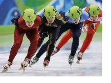

Интересные факты
Шорт-трек – очень занятный вид спорта. На закуску – несколько любопытных фактов о нем:
- Любопытно, что профессионалы настаивают: шорт-трек – не продолжение конькобежного спорта, а следующая ступень его развития. Так-то! Объясняют они это тем, что шорт-трек не требует особых условий, достаточно обычных хоккейных полей, которые есть практически везде. А, значит, спорт становится более доступным всем желающим.
- Соревноваться в шорт-треке – занятие не для слабаков. Выдерживать приходится не один и не два забега, причем подряд. Кроме того, шорт-трек может негативно влиять на здоровье спортсменов – из-за очень крутых поворотов. Бегун опирается на специальные маркеры, давая большую нагрузку на позвоночный столб, что чревато болями в спине и пояснице. Потому спортсмены тщательно разминаются перед стартом, а также уделяют много времени проработке мышц спины.
- Бегуны из шорт-трека могут легко перейти в традиционный конькобежный спорт, а вот наоборот сделать возможно не всегда. В конькобежном спорте хорошими характеристиками считаются высокий рост и развитая мускулатура. Шорт-трек же требует, прежде всего, ловкости, легкости и скорости движений, так что призерами чаще становятся невысокие и стройные спортсмены. Которые потом и в традиционном беге на коньках показывают впечатляющие результаты.
- Коньки в шорт-треке точат после каждого забега! Это необходимо для более быстрого передвижения, а также дляточного и аккуратного прохождения очень крутых поворотов. Все спортсмены имеют при себе станок и камень для точки. Лезвия коньков при этом чуть смещены от центра влево – чтобы при прохождении тех же поворотов ботинки не коснулись льда.
- У бегунов в шорт-треке особая экипировка. Мало того, что коньки у них не такие, как у всех – со смещенными лезвиями необычной формы, так еще обязательны жесткие перчатки, изготовленные из эпоксидного клея. Кроме того, в комплекте идут налокотники, наколенники, шлемы, щитки от подбородка до шеи. Иногда – и очки, защищающие глаза от ледяной крошки.
- Эстафета в этой разновидности бега на льду также интересна. Тем, что передать палочку можно в любой точке дистанции. Да еще и подтолкнуть коллегу не воспрещается – чтобы придать разгона. А еще в шорт-треке стреляют из стартового пистолета дважды: традиционно на старте, а потом за три круга до финиша – для уведомления спортсменов.
- Пройденные бегунами круги считает один из судей. Он наблюдает за лидером забега, по которому и ведется подсчет. Забавно, что на табло указывают количество не пройденных кругов, а оставшихся до финиша.
- В шорт-треке разрешен обгон! Причем сделать это конькобежец может на любой части дорожки, но ответственность за возможное столкновение несет только обгоняющий.
- В одном забеге, по кодексу шорт-трека, не могут соревноваться коллеги по команде.